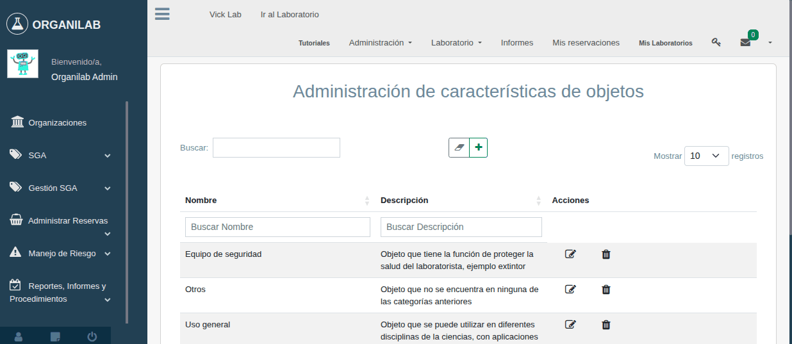

6. Seguridad y Almacenamiento
El almacenamiento seguro de sustancias químicas es un pilar fundamental de la gestión de laboratorios. Organilab registra información clave sobre clases de almacenamiento, compatibilidad química y niveles de peligrosidad para ayudar a mantener un entorno de trabajo seguro.
Clases de Almacenamiento
Las clases de almacenamiento (campo storage_class en las características de sustancia) definen las condiciones específicas bajo las cuales debe guardarse cada sustancia. Esta clasificación es esencial para evitar reacciones peligrosas entre sustancias incompatibles.
| Clase | Descripción | Condiciones |
|---|---|---|
| 1 | Explosivos | Almacén separado, lejos de fuentes de calor e ignición, acceso restringido |
| 2 | Gases comprimidos | Cilindros asegurados verticalmente, ventilación adecuada, lejos del calor |
| 3 | Líquidos inflamables | Armario de seguridad para inflamables, lejos de fuentes de ignición |
| 4 | Sólidos inflamables | Área seca, lejos de líquidos inflamables y oxidantes |
| 5 | Oxidantes y peróxidos orgánicos | Separados de inflamables y reductores, área ventilada y fresca |
| 6 | Sustancias tóxicas | Armario cerrado con llave, acceso restringido, inventario controlado |
| 7 | Sustancias corrosivas | Estantes resistentes a la corrosión, contención secundaria, separar ácidos de bases |
| 8 | Sustancias que requieren refrigeración | Refrigerador o congelador dedicado, sin alimentos, a prueba de explosión si es necesario |
Compatibilidad Química
Uno de los principios más importantes del almacenamiento seguro es no almacenar juntas sustancias que puedan reaccionar entre sí de forma peligrosa. Las principales incompatibilidades son:
- Ácidos fuertes + Bases fuertes: Reacción exotérmica violenta. Almacenar en estantes separados.
- Oxidantes + Reductores/Inflamables: Riesgo de incendio o explosión. Mantener en armarios distintos.
- Ácidos + Metales reactivos: Generación de hidrógeno inflamable. Separar completamente.
- Agua-reactivos + Cualquier fuente de humedad: Reacciones violentas. Almacenar en ambiente seco.
- Peróxidos orgánicos + Calor/Fricción: Riesgo de detonación. Almacenar en frío y con cuidado.
Directiva Seveso III
El campo seveso_list en las características de sustancia indica si una sustancia está incluida en la lista Seveso. La Directiva Seveso III es una normativa europea (adoptada como referencia internacional) que establece obligaciones para instalaciones que almacenan sustancias peligrosas en cantidades significativas.
Cuando una sustancia está marcada como Seveso en Organilab, el sistema alerta sobre las obligaciones adicionales de control y reporte que aplican. Esto es especialmente relevante para laboratorios que manejan grandes cantidades de sustancias peligrosas.
Órganos Diana
El campo white_organ (órganos diana) registra los órganos del cuerpo humano que pueden verse afectados por la exposición a una sustancia. Esta información es crítica para:
- Seleccionar el equipo de protección personal adecuado.
- Definir protocolos de vigilancia médica para el personal expuesto.
- Evaluar el riesgo de exposición crónica en el lugar de trabajo.
- Determinar las medidas de primeros auxilios apropiadas.
Los órganos diana comunes incluyen: sistema nervioso, hígado, riñones, pulmones, piel, ojos, sistema reproductivo, sistema cardiovascular y sistema hematopoyético.
Diamante NFPA 704
El diamante NFPA (National Fire Protection Association) es un sistema de identificación rápida de peligros ampliamente utilizado. Organilab almacena los valores NFPA en las características de sustancia para facilitar su consulta.
| Cuadrante | Color | Peligro | Escala |
|---|---|---|---|
| Izquierdo | Azul | Salud | 0 (mínimo) a 4 (mortal) |
| Superior | Rojo | Inflamabilidad | 0 (no arde) a 4 (extremadamente inflamable) |
| Derecho | Amarillo | Reactividad / Inestabilidad | 0 (estable) a 4 (puede detonar) |
| Inferior | Blanco | Riesgo específico | OX (oxidante), W (reacciona con agua), SA (asfixiante simple) |

Valores NFPA de un reactivo en la vista de características de sustancia
Buenas Prácticas de Manejo Seguro
- Conozca antes de usar: Lea la hoja de seguridad completa de cada sustancia antes de manipularla por primera vez.
- Use equipo de protección: Siempre utilice el equipo de protección personal indicado en la sección 8 de la MSDS (guantes, gafas, bata, etc.).
- Etiquete todo: Nunca trabaje con recipientes sin etiqueta. Si transvasa una sustancia, etiquete inmediatamente el nuevo recipiente.
- Minimice cantidades: Mantenga en el área de trabajo solo la cantidad mínima necesaria de sustancias peligrosas.
- Ventilación adecuada: Trabaje con sustancias volátiles o tóxicas en campanas de extracción.
- Segregación correcta: Almacene las sustancias según su clase de almacenamiento y compatibilidad química.
- Inspección regular: Revise periódicamente los envases para detectar fugas, corrosión o deterioro de etiquetas.
- Plan de emergencia: Conozca la ubicación de duchas de emergencia, lavaojos, extintores y kit de derrames.
Relación con Zonas de Riesgo
La información de seguridad de las sustancias está estrechamente relacionada con la gestión de riesgos del laboratorio. El módulo de Gestión de Riesgos de Organilab permite definir zonas de riesgo dentro del laboratorio, evaluar los peligros presentes y establecer medidas de control.
Para obtener más información sobre la configuración de zonas de riesgo y evaluaciones de peligros, consulte la sección correspondiente en el Capítulo 1: Sistema de Permisos, donde se explica cómo los permisos controlan el acceso a las funciones de gestión de riesgos.